JEE Main 2026 (Session 2), 6 Apr Shift 1: worked solutions for review
Questions and options are NTA’s own images; the green option is NTA’s final key. Every solution below was written by Claude
and checked against NTA’s final key. It is not NTA’s solution. Please mark anything unclear or wrong.
Q1 · Mathematics · MCQ · ID 6952782136
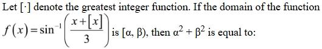
(1) 
(2) 
(3) 
Hint 1: sin−1 needs its input in [−1, 1], so −3 ≤ x + [x] ≤ 3. Fix [x] = n and test each n.
Hint 2: On [n, n+1), x + [x] runs from 2n up to (but not including) 2n + 1.
What this tests: Domain of sin−1 with the greatest integer function.
1. n = 1: values in [2, 3), so x in [1, 2) works.
2. n = 0: [0, 1) works. n = −1: values in [−3, −2), so x in [−1, 0) works.
3. n = 2 gives values ≥ 4; n = −2 gives values below −3. Neither works.
4. Domain [−1, 2): α² + β² = 1 + 4 = 5.
Answer: (2)
If this felt hard: Revise 'Inverse Trigonometric Functions' (domains). Fixing [x] = n is the standard move.
Claude’s answer: 2 · NTA final key: 2 · agrees · Answer recomputed with SymPy (tools/verify_pyq_solutions.py)
Q2 · Mathematics · MCQ · ID 6952782137
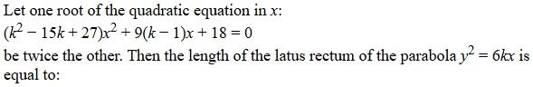
(1) 
(3) 
(4) 
Hint 1: Call the roots r and 2r. Write their sum and product using the coefficients.
Hint 2: With D = k² − 15k + 27: 3r = −9(k − 1)/D and 2r² = 18/D. Eliminate r.
What this tests: Relations between roots and coefficients.
1. r = −3(k − 1)/D, so 2 × 9(k − 1)²/D² = 18/D, giving (k − 1)² = D.
2. k² − 2k + 1 = k² − 15k + 27, so k = 2.
3. The parabola is y² = 12x, latus rectum 12.
Answer: (4)
If this felt hard: Revise 'Quadratic Equations'.
Claude’s answer: 4 · NTA final key: 4 · agrees · Answer recomputed with SymPy (tools/verify_pyq_solutions.py)
Q3 · Mathematics · MCQ · ID 6952782138
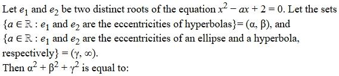
(1) 
(2) 
(3) 
Hint 1: The product of the roots is 2. A hyperbola has e > 1 and an ellipse has 0 < e < 1.
Hint 2: Both roots > 1 (and distinct): use f(1) > 0, the vertex a/2 > 1 and D > 0. One root in (0, 1) and one > 1: use f(1) < 0.
What this tests: Location of roots of a quadratic; eccentricities of conics.
1. Both > 1: a² > 8, a > 2 and 3 − a > 0, so a is in (2√2, 3): α² + β² = 8 + 9 = 17.
2. One in (0, 1), one > 1: f(1) = 3 − a < 0, so a > 3: γ = 3.
3. Total = 17 + 9 = 26.
Answer: (3)
If this felt hard: Revise 'Quadratic Equations' (location of roots) and 'Conic Sections'.
Claude’s answer: 3 · NTA final key: 3 · agrees · Answer recomputed with SymPy (tools/verify_pyq_solutions.py)
Q4 · Mathematics · MCQ · ID 6952782139
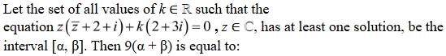
Hint 1: Put z = x + iy and separate the real and imaginary parts.
Hint 2: Real: x² + y² + 2x − y + 2k = 0 (a circle). Imaginary: x + 2y + 3k = 0 (a line). A solution exists iff the line meets the circle.
What this tests: Complex equations as geometry (line meeting circle).
1. Centre (−1, 1/2), radius² = 5/4 − 2k. Distance from the centre to the line = 3|k|/√5.
2. 9k²/5 ≤ 5/4 − 2k ⇔ 36k² + 40k − 25 ≤ 0.
3. α + β = −40/36, so 9(α + β) = −10.
Answer: (1)
If this felt hard: Revise 'Complex Numbers' and 'Conic Sections' (circle and line).
Claude’s answer: 1 · NTA final key: 1 · agrees · Answer recomputed with SymPy (tools/verify_pyq_solutions.py)
Q5 · Mathematics · MCQ · ID 6952782140
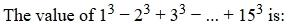
Hint 1: Alternating sum = (sum of all cubes) − 2 × (sum of even cubes).
Hint 2: Σ1..15 k³ = (15 × 16/2)² = 14400. Even cubes: 8 × Σ1..7 k³ = 8 × 784.
What this tests: Sums of cubes.
1. 14400 − 2 × 6272 = 1856.
Answer: (2)
If this felt hard: Revise 'Sequences and Series'.
Claude’s answer: 2 · NTA final key: 2 · agrees · Answer recomputed with SymPy (tools/verify_pyq_solutions.py)
Q6 · Mathematics · MCQ · ID 6952782141
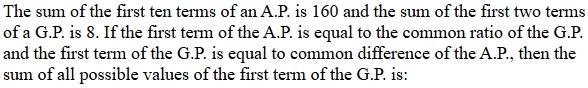
Hint 1: Let the AP have first term a = r (the GP's ratio) and difference d = g (the GP's first term).
Hint 2: S10 = 5(2r + 9g) = 160 and g(1 + r) = 8.
What this tests: AP and GP combined.
1. r = (32 − 9g)/2. Then g(17 − 9g/2) = 8, i.e. 9g² − 34g + 16 = 0.
2. Sum of the roots = 34/9.
Answer: (1)
If this felt hard: Revise 'Sequences and Series'.
Claude’s answer: 1 · NTA final key: 1 · agrees · Answer recomputed with SymPy (tools/verify_pyq_solutions.py)
Q7 · Mathematics · MCQ · ID 6952782142
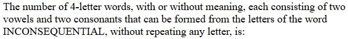
Hint 1: List the distinct vowels and consonants in INCONSEQUENTIAL.
Hint 2: Vowels: I, O, E, U, A (5). Consonants: N, C, S, Q, T, L (6). No letter repeats in a word.
What this tests: Selection then arrangement.
1. C(5, 2) × C(6, 2) × 4! = 10 × 15 × 24 = 3600.
Answer: (4)
If this felt hard: Revise 'Permutations and Combinations'. Count distinct letters only.
Claude’s answer: 4 · NTA final key: 4 · agrees · Answer recomputed with SymPy (tools/verify_pyq_solutions.py)
Q8 · Mathematics · MCQ · ID 6952782143
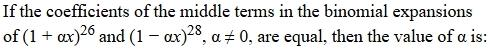
(1) 
Hint 1: (1 + αx)26 has one middle term (T14); (1 − αx)28 has one middle term (T15).
Hint 2: C(26, 13)α13 = C(28, 14)α14.
What this tests: Middle terms of binomial expansions.
1. α = C(26, 13)/C(28, 14).
2. C(28, 14) = C(26, 13) × (28 × 27)/(14 × 14) = (27/7)C(26, 13).
3. α = 7/27.
Answer: (4)
If this felt hard: Revise 'Binomial Theorem'.
Claude’s answer: 4 · NTA final key: 4 · agrees · Answer recomputed with SymPy (tools/verify_pyq_solutions.py)
Q9 · Mathematics · MCQ · ID 6952782144
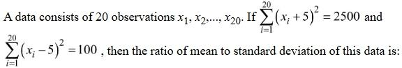
(3) 
Hint 1: Expand both sums and subtract them to find Σx.
Hint 2: Σx² + 10Σx + 500 = 2500 and Σx² − 10Σx + 500 = 100.
What this tests: Mean and SD from shifted sums.
1. 20Σx = 2400, so Σx = 120 and the mean is 6.
2. Σx² = 800, variance = 40 − 36 = 4, SD = 2.
3. Mean : SD = 3 : 1.
Answer: (2)
If this felt hard: Revise 'Statistics'.
Claude’s answer: 2 · NTA final key: 2 · agrees · Answer recomputed with SymPy (tools/verify_pyq_solutions.py)
Q10 · Mathematics · MCQ · ID 6952782145
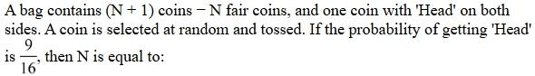
(1) 
(2) 
(3) 
(4) 
Hint 1: Total probability: choose a fair coin or the two-headed coin.
Hint 2: P(H) = (N/(N + 1))(1/2) + 1/(N + 1).
What this tests: Total probability.
1. (N + 2)/(2(N + 1)) = 9/16, so 16N + 32 = 18N + 18 and N = 7.
Answer: (2)
If this felt hard: Revise 'Probability'.
Claude’s answer: 2 · NTA final key: 2 · agrees · Answer recomputed with SymPy (tools/verify_pyq_solutions.py)
Q11 · Mathematics · MCQ · ID 6952782146
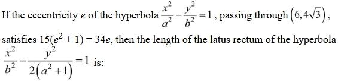
(1) 
(3) 
(4) 
Hint 1: Solve for e first; a hyperbola needs e > 1.
Hint 2: e = 5/3, so b²/a² = 16/9. Put (6, 4√3) in the hyperbola.
What this tests: Hyperbola parameters.
1. 36/a² − 48 × 9/(16a²) = 9/a² = 1, so a² = 9 and b² = 16.
2. New hyperbola x²/16 − y²/20 = 1: latus rectum = 2 × 20/4 = 10.
Answer: (1)
If this felt hard: Revise 'Conic Sections'.
Claude’s answer: 1 · NTA final key: 1 · agrees · Answer recomputed with SymPy (tools/verify_pyq_solutions.py)
Q12 · Mathematics · MCQ · ID 6952782147
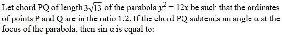
Hint 1: Take P = (3t², 6t). Ordinates 1 : 2 means Q has parameter 2t.
Hint 2: PQ² = 9(4t² − t²)² + 36(2t − t)² = 117. Solve for t², then use the focus (3, 0).
What this tests: Parabola parametric points; angle at the focus.
1. 81t⁴ + 36t² − 117 = 0, so t² = 1: P(3, 6), Q(12, 12).
2. FP = (0, 6), FQ = (9, 12). sin α = |0 × 12 − 6 × 9|/(6 × 15) = 54/90 = 3/5.
Answer: (1)
If this felt hard: Revise 'Conic Sections' (parabola) and the 2D cross product for sin of an angle.
Claude’s answer: 1 · NTA final key: 1 · agrees · Answer recomputed with SymPy (tools/verify_pyq_solutions.py)
Q13 · Mathematics · MCQ · ID 6952782148
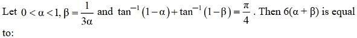
(1) 
(2) 
(3) 
(4) 
Hint 1: Use tan−1u + tan−1v = tan−1((u + v)/(1 − uv)).
Hint 2: (2 − α − β)/(α + β − αβ) = 1, with αβ = 1/3.
What this tests: Inverse tangent addition.
1. 2 − 2(α + β) + αβ = 0, so α + β = (2 + 1/3)/2 = 7/6.
2. 6(α + β) = 7. (Check: α = 1/2, β = 2/3 works.)
Answer: (2)
If this felt hard: Revise 'Inverse Trigonometric Functions'.
Claude’s answer: 2 · NTA final key: 2 · agrees · Answer recomputed with SymPy (tools/verify_pyq_solutions.py)
Q14 · Mathematics · MCQ · ID 6952782149
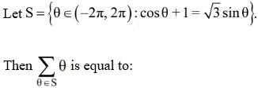
Hint 1: Write √3 sin θ − cos θ as 2 sin(θ − π/6).
Hint 2: 2 sin(θ − π/6) = 1, so θ − π/6 = π/6 or 5π/6 (plus 2nπ).
What this tests: Trigonometric equations in an interval.
1. θ = π/3 + 2nπ or π + 2nπ.
2. In (−2π, 2π): π/3, −5π/3, π, −π.
3. Sum = −4π/3.
Answer: (2)
If this felt hard: Revise 'Trigonometric Functions'.
Claude’s answer: 2 · NTA final key: 2 · agrees · Answer recomputed with SymPy (tools/verify_pyq_solutions.py)
Q15 · Mathematics · MCQ · ID 6952782150
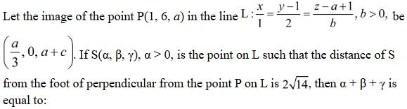
(1) 
(2) 
(4)
Hint 1: The midpoint of P and its image lies on L, and the segment is perpendicular to L.
Hint 2: Midpoint ((1 + a/3)/2, 3, (2a + c)/2). y = 3 on L means t = 1, so x = 1 and a = 3.
What this tests: Image of a point in a line; points at a given distance on a line.
1. Perpendicular: 12 − bc = 0. z: 2 + b = 3 + c/2. So c = 4, b = 3 (b > 0).
2. Foot F = (1, 3, 5). Moving 2√14 along (1, 2, 3)/√14: S = (3, 7, 11) or (−1, −1, −1).
3. α > 0: S = (3, 7, 11), sum 21.
Answer: (3)
If this felt hard: Revise 'Three Dimensional Geometry'.
Claude’s answer: 3 · NTA final key: 3 · agrees · Answer recomputed with SymPy (tools/verify_pyq_solutions.py)
Q16 · Mathematics · MCQ · ID 6952782151
(1)
(2)
(3)
(4)
Hint 1: L's direction is the cross product of the directions of L1 and L2.
Hint 2: (3, 5, 7) × (1, 4, 7) = (7, −14, 7) ∥ (1, −2, 1). L3 has direction (2, 1, 2).
What this tests: Angle between lines; cross product.
1. cos θ = |2 − 2 + 2|/(√6 × 3) = 2/(3√6).
2. sin θ = √(50/54), so tan θ = √50/2 = 5√2/2.
Answer: (2)
If this felt hard: Revise 'Three Dimensional Geometry'.
Claude’s answer: 2 · NTA final key: 2 · agrees · Answer recomputed with SymPy (tools/verify_pyq_solutions.py)
Q17 · Mathematics · MCQ · ID 6952782152
(1) 
(2) 
(3) 
(4) 
Hint 1: Expand sin x to the x³ term.
Hint 2: x² − sin²x ≈ x² − (x − x³/6)² ≈ x⁴/3. The numerator ≈ x⁴.
What this tests: Limits with series expansions.
1. Limit = x⁴/(x⁴/3) = 3.
Answer: (2)
If this felt hard: Revise 'Limits'.
Claude’s answer: 2 · NTA final key: 2 · agrees · Answer recomputed with SymPy (tools/verify_pyq_solutions.py)
Q18 · Mathematics · MCQ · ID 6952782153
(1)
(2)
(3)
(4)
Hint 1: Add the integral to itself with x → −x. What is 1/(1 + es) + 1/(1 + e−s)?
Hint 2: The sum is 1, so I = ∫ from 0 to π/4 of 32 cos⁴x dx.
What this tests: The property ∫−aa f(x) dx = ∫0a [f(x) + f(−x)] dx.
1. cos⁴x = (3 + 4 cos 2x + cos 4x)/8.
2. ∫ from 0 to π/4 = (3π/4 + 2)/8; × 32 = 3π + 8.
Answer: (2)
If this felt hard: Revise 'Definite Integrals'.
Claude’s answer: 2 · NTA final key: 2 · agrees · Answer recomputed with SymPy (tools/verify_pyq_solutions.py)
Q19 · Mathematics · MCQ · ID 6952782154
(1) 
(2) 
(3)
(4)
Hint 1: Integrate with respect to y. For each y ≥ 0, x goes from 0 to the smaller of (y² + 3)/4 and 6 − y.
Hint 2: The parabola and the line cross at y = 3.
What this tests: Area using horizontal strips.
1. Area = ∫ from 0 to 3 of (y² + 3)/4 dy + ∫ from 3 to 6 of (6 − y) dy = 4.5 + 4.5 = 9.
Answer: (2)
If this felt hard: Revise 'Application of Integrals'.
Claude’s answer: 2 · NTA final key: 2 · agrees · Answer recomputed with SymPy (tools/verify_pyq_solutions.py)
Q20 · Mathematics · MCQ · ID 6952782155
(1)
(2)
(3)
(4)
Hint 1: Write out f and g explicitly: f decreasing, g increasing.
Hint 2: f(1) = e³, …, f(4) = 1. g(1) = 1/4, g(e) = 1/3, g(e²) = 1/2, g(e³) = 1. So g−1(1/2) = e² and f−1(e²) = 2.
What this tests: Bijections, inverses and area.
1. φ(x) = 2x.
2. Area = ∫ from 0 to 1 of (2x − x²) dx = 1/ln 2 − 1/3 = (3 − ln 2)/(3 ln 2).
Answer: (1)
If this felt hard: Revise 'Relations and Functions' and 'Application of Integrals'.
Claude’s answer: 1 · NTA final key: 1 · agrees · Answer recomputed with SymPy (tools/verify_pyq_solutions.py)
Q21 · Mathematics · Numerical · ID 6952782156
Hint 1: Use adj(adj A) = |A|A for 3×3 matrices, and A·adj A = |A|I.
Hint 2: |A| = −1, so adj(adj A) = −A and adj(A)·adj(adj A) = −adj(A)·A = I.
What this tests: Adjoint identities.
1. The equation becomes A² − αA + βI = RHS.
2. A² = [[2, −1, 1], [−1, 1, 0], [0, 0, 1]].
3. Entry (1,2): −1 − α = −2, so α = 1. Entry (3,3): 1 − α + β = −1, so β = −1.
4. (α − β)² = 4.
Answer: 4
If this felt hard: Revise 'Matrices and Determinants'.
Claude’s answer: 4 · NTA final key: 4 · agrees · Answer recomputed with SymPy (tools/verify_pyq_solutions.py)
Q22 · Mathematics · Numerical · ID 6952782157
Hint 1: An equilateral triangle inscribed in a circle of radius r has area (3√3/4)r².
Hint 2: r² = 36, so g² + f² = 61. The centre (h, 2h − 4) is in the first quadrant.
What this tests: Circles: inscribed triangle, chord length.
1. h² + (2h − 4)² = 61 gives h = 5, centre (5, 6).
2. Distance to x = 1 is 4; half chord = √(36 − 16) = √20.
3. Chord² = 80.
Answer: 80
If this felt hard: Revise 'Conic Sections' (circle).
Claude’s answer: 80 · NTA final key: 80 · agrees · Answer recomputed with SymPy (tools/verify_pyq_solutions.py)
Q23 · Mathematics · Numerical · ID 6952782158
Hint 1: Cross a × c = b with a. Use the vector triple product.
Hint 2: a × (a × c) = a(a·c) − c|a|² = a × b, so c = (3a − a × b)/3.
What this tests: Vector triple product.
1. a × b = (−2, 1, 1), so c = (5, 2, 2)/3.
2. a − 2b = (1, −1, 3). c·(a − 2b) = (5 − 2 + 6)/3 = 3.
Answer: 3
If this felt hard: Revise 'Vector Algebra'.
Claude’s answer: 3 · NTA final key: 3 · agrees · Answer recomputed with SymPy (tools/verify_pyq_solutions.py)
Q24 · Mathematics · Numerical · ID 6952782159
Hint 1: min of α tan²θ + β cot²θ by AM–GM; max of α sin²θ + β cos²θ when α > β.
Hint 2: min f = 2√(αβ); max g = α. So 2√(αβ) = α, i.e. α = 4β.
What this tests: AM–GM; GP sums.
1. First term α/(2β) = 2, ratio 2β/α = 1/2.
2. S10 = 2(1 − 2−10)/(1/2) = 1023/256.
3. m + n = 1279.
Answer: 1279
If this felt hard: Revise 'Sequences and Series' and AM–GM.
Claude’s answer: 1279 · NTA final key: 1279 · agrees · Answer recomputed with SymPy (tools/verify_pyq_solutions.py)
Q25 · Mathematics · Numerical · ID 6952782160
Hint 1: Group the terms: (x dy + y dx) appears multiplied by (x − √(x² − 1)).
Hint 2: (x − √(x² − 1)) d(xy) = x dx, and 1/(x − √(x² − 1)) = x + √(x² − 1).
What this tests: Exact differential equations.
1. d(xy) = (x² + x√(x² − 1)) dx, so xy = x³/3 + (x² − 1)3/2/3 + C. y(1) = 1 gives C = 2/3.
2. At x = √5: √5 y = 5√5/3 + 8/3 + 2/3, so y = 5/3 + 2√5/3 ≈ 3.16.
3. Greatest integer less than y = 3.
Answer: 3
If this felt hard: Spotting d(xy) is the key. Revise 'Differential Equations'.
Claude’s answer: 3 · NTA final key: 3 · agrees · Answer recomputed with SymPy (tools/verify_pyq_solutions.py)
Q26 · Physics · MCQ · ID 6952782161
(1)
(2)
(3)
(4)
Hint 1: ρ = 4m/(πd²l). Fractional errors add, with 2 for d².
Hint 2: Δρ/ρ = Δm/m + Δl/l + 2Δd/d.
What this tests: Error propagation.
1. 0.02/97.42 + 0.05/8.35 + 2 × 0.02/20.20 ≈ 0.0002 + 0.0060 + 0.0020 = 0.0082 = 0.82%.
Answer: (2)
If this felt hard: Revise 'Units and Measurements'.
Claude’s answer: 2 · NTA final key: 2 · agrees · Answer recomputed by script (tools/verify_pyq_solutions.py)
Q27 · Physics · MCQ · ID 6952782162
(1)
(2)
(3)
(4)
Hint 1: B is added to x, so [B] = L. Then find [A] from V.
Hint 2: A√x/x = A L−1/2 must be energy ML²T−2.
What this tests: Dimensional analysis.
1. [A] = ML5/2T−2, [B] = L.
2. [AB] = ML7/2T−2.
Answer: (4)
If this felt hard: Revise 'Units and Measurements'.
Claude’s answer: 4 · NTA final key: 4 · agrees · Answer recomputed by script (tools/verify_pyq_solutions.py)
Q28 · Physics · MCQ · ID 6952782163
(1)
(2)
(3)
(4)
Hint 1: Work–energy theorem: Wgravity + Wresistance = ΔKE.
Hint 2: Wg = mgh = 0.001 × 10 × 1000 = 10 J. ΔKE = ½ × 0.001 × 25.
What this tests: Work–energy theorem with resistance.
1. Wres = 0.0125 − 10 ≈ −9.99 J, nearest option −9.98 J.
Answer: (4)
If this felt hard: Revise 'Work, Energy and Power'.
Claude’s answer: 4 · NTA final key: 4 · agrees · Answer recomputed by script (tools/verify_pyq_solutions.py)
Q29 · Physics · MCQ · ID 6952782164
(1)
(2)
(3) 
(4)
Hint 1: Work in the cube's frame: a pseudo force m(g/2) acts backwards on each block.
Hint 2: P (frictionless top): T = 2 × g/2 = 10 N. Q presses on the side face with N = 1.5 × g/2 = 7.5 N.
What this tests: Pseudo forces and friction.
1. Vertical for Q: T + f = 15 N, so f = 5 N.
2. μ ≥ 5/7.5 ≈ 0.67.
Answer: (2)
If this felt hard: Revise 'Laws of Motion' (non-inertial frames).
Claude’s answer: 2 · NTA final key: 2 · agrees · Answer recomputed by script (tools/verify_pyq_solutions.py)
Q30 · Physics · MCQ · ID 6952782165
(1)
(2)
(3)
(4)
Hint 1: Maximum tension = stress × area. Then T − mg = ma.
Hint 2: Tmax = 4×10⁸ × 3.14 × (4×10−3)² = 20096 N.
What this tests: Breaking stress and Newton's second law.
1. a = 20096/1600 − 10 = 2.56 m/s².
Answer: (1)
If this felt hard: Revise 'Mechanical Properties of Solids'.
Claude’s answer: 1 · NTA final key: 1 · agrees · Answer recomputed by script (tools/verify_pyq_solutions.py)
Q31 · Physics · MCQ · ID 6952782166
(1)
(2)
(3)
(4)
Hint 1: I = (2/5)MR², ω = 1200 rpm in rad/s. Torque = Iω/t.
Hint 2: I = 0.0032 kg m², ω = 40π rad/s.
What this tests: Rotational kinematics and torque.
1. τ = 0.0032 × 40π/10 = 0.0128π N m.
2. Angle = ωt/2 = 200π rad = 100 rotations.
Answer: (4)
If this felt hard: Revise 'System of Particles and Rotational Motion'.
Claude’s answer: 4 · NTA final key: 4 · agrees · Answer recomputed by script (tools/verify_pyq_solutions.py)
Q32 · Physics · MCQ · ID 6952782167
(1) 
(2) 
(3) 
(4) 
Hint 1: At the top of the loop: N + mg = mv²/R with N = 3mg.
Hint 2: v² = 4gR at the top. Energy: mgh = mg(2R) + ½mv².
What this tests: Vertical circular motion with energy conservation.
1. h = 2R + 2R = 4R.
Answer: (2)
If this felt hard: Revise 'Work, Energy and Power'.
Claude’s answer: 2 · NTA final key: 2 · agrees · Answer recomputed by script (tools/verify_pyq_solutions.py)
Q33 · Physics · MCQ · ID 6952782168
(1)
(2)
(3)
(4)
Hint 1: Set up coordinates with p (the midpoint of the altitude from the 15 kg mass) as the origin.
Hint 2: Altitude = 10 cos 60° = 5 m, half-base = 5√3 m. So 15 kg is at (0, 2.5), 2 kg at (−5√3, −2.5), 3 kg at (5√3, −2.5).
What this tests: Centre of mass.
1. x = (−10√3 + 15√3)/20 = √3/4.
2. y = (37.5 − 12.5)/20 = 1.25.
Answer: (1)
If this felt hard: Revise 'System of Particles and Rotational Motion'.
Claude’s answer: 1 · NTA final key: 1 · agrees · Answer recomputed by script (tools/verify_pyq_solutions.py)
Q34 · Physics · MCQ · ID 6952782169
(1)
(2)
(3)
(4)
Hint 1: Same tension and area, equal elongation: FL/(AY) is the same for both.
Hint 2: LB = LA × YB/YA.
What this tests: Young's modulus in series wires.
1. LB = 2.2 × 11/20 = 1.21 m.
Answer: (3)
If this felt hard: Revise 'Mechanical Properties of Solids'.
Claude’s answer: 3 · NTA final key: 3 · agrees · Answer recomputed by script (tools/verify_pyq_solutions.py)
Q35 · Physics · MCQ · ID 6952782170
(1)
(2)
(3)
(4)
Hint 1: The total number of moles stays the same; the final pressure is equal in both vessels.
Hint 2: 2 × 90/400 = P(1/400 + 1/500).
What this tests: Ideal gas in connected vessels.
1. 0.45 = P × 9/2000, so P = 100 kPa.
Answer: (1)
If this felt hard: Revise 'Kinetic Theory'.
Claude’s answer: 1 · NTA final key: 1 · agrees · Answer recomputed by script (tools/verify_pyq_solutions.py)
Q36 · Physics · MCQ · ID 6952782171
(1) 
(2)
(3)
(4) 
Hint 1: I ∝ cos²(φ/2) with φ = (2π/λ) × path difference.
Hint 2: A: φ = 2π/3. B: φ = π/3.
What this tests: Interference intensity.
1. IA ∝ cos²60° = 1/4; IB ∝ cos²30° = 3/4.
2. Ratio = 1/3.
Answer: (3)
If this felt hard: Revise 'Wave Optics'.
Claude’s answer: 3 · NTA final key: 3 · agrees · Answer recomputed by script (tools/verify_pyq_solutions.py)
Q37 · Physics · MCQ · ID 6952782172
(1)
(2)
(3)
(4)
Hint 1: x = A cos ωt. When is cos ωt = 1/√2?
Hint 2: ωt = π/4, so t = T/8.
What this tests: SHM time intervals.
1. t = 5/8 s.
Answer: (3)
If this felt hard: Revise 'Oscillations'.
Claude’s answer: 3 · NTA final key: 3 · agrees · Answer recomputed by script (tools/verify_pyq_solutions.py)
Q38 · Physics · MCQ · ID 6952782173
(1)
(2)
(3) 
(4)
Hint 1: Field at the centre of a uniformly charged half ring: E = 2kλ/R with λ = Q/(πR).
Hint 2: E = Q/(2π²ε0R²).
What this tests: Field of a charged semicircular ring.
1. Q = 100 × 2π² × 8.85×10−12 × 0.35² ≈ 2.14 × 10−9 C = 2.14 nC.
Answer: (1)
If this felt hard: Revise 'Electric Charges and Fields'.
Claude’s answer: 1 · NTA final key: 1 · agrees · Answer recomputed by script (tools/verify_pyq_solutions.py)
Q39 · Physics · MCQ · ID 6952782174
(1) 
(2) 
(3) 
(4) 
Hint 1: Which diode conducts? The middle diode points against the current (reverse biased), so its branch carries nothing.
Hint 2: All 0.5 mA flows through the LED. Its voltage = P/I.
What this tests: Diode circuits; power rating.
1. VLED = 2 mW/0.5 mA = 4 V.
2. RS = (5 − 4)/0.5 mA = 2 kΩ.
Answer: (2)
If this felt hard: Revise 'Semiconductor Electronics'.
Claude’s answer: 2 · NTA final key: 2 · agrees · Answer recomputed by script (tools/verify_pyq_solutions.py)
Note: Depends on reading the middle diode as reverse biased in the figure.
Q40 · Physics · MCQ · ID 6952782175
(1)
(2)
(3)
(4)
Hint 1: A point source radiates equally in all directions. What changes when you move on the same sphere?
Hint 2: Intensity depends only on distance: I = P/(4πr²).
What this tests: Intensity of a point source.
1. Same distance, so the same intensity I0.
Answer: (2)
If this felt hard: Revise 'Electromagnetic Waves'.
Claude’s answer: 2 · NTA final key: 2 · agrees · Theory question: not computable, needs a teacher’s review
Q41 · Physics · MCQ · ID 6952782176
(1)
(2)
(3)
(4)
Hint 1: Refraction at one curved surface. From the figure the centre is on the far side, so R > 0.
Hint 2: n2/v − n1/u = (n2 − n1)/R with u = −4R. Magnification m = n1v/(n2u).
What this tests: Refraction at a spherical surface.
1. 1.4/v = 0.4/R − 1/(4R) = 0.15/R, so v ≈ 9.33R.
2. |m| = 9.33R/(1.4 × 4R) ≈ 1.66.
Answer: (1)
If this felt hard: Revise 'Ray Optics'.
Claude’s answer: 1 · NTA final key: 1 · agrees · Answer recomputed by script (tools/verify_pyq_solutions.py)
Q42 · Physics · MCQ · ID 6952782177
(1)
(2)
(3)
(4)
Hint 1: Field at the centre of the loop: B = μ0I/(2r). Energy density = B²/(2μ0).
Hint 2: B = 4π×10−7 × 2/0.2 ≈ 1.256 × 10−5 T.
What this tests: Magnetic energy density.
1. u ≈ 6.28 × 10−5 J/m³.
2. Energy in 10−9 m³ = 6.28 × 10−14 J.
Answer: (1)
If this felt hard: Revise 'Electromagnetic Induction'.
Claude’s answer: 1 · NTA final key: 1 · agrees · Answer recomputed by script (tools/verify_pyq_solutions.py)
Q43 · Physics · MCQ · ID 6952782178
(1)
(2) 
(3)
(4) 
Hint 1: Voltage across the inductor = E − iR (the rest is across its resistance).
Hint 2: At 2 mA: 1 − 0.2. At 4 mA: 1 − 0.4.
What this tests: RL circuit transients.
1. Ratio = 0.8/0.6 = 4/3.
Answer: (1)
If this felt hard: Revise 'Electromagnetic Induction'.
Claude’s answer: 1 · NTA final key: 1 · agrees · Answer recomputed by script (tools/verify_pyq_solutions.py)
Q44 · Physics · MCQ · ID 6952782179
(1)
(2)
(3)
(4)
Hint 1: Photon momentum p = h/λ ∝ 1/λ ∝ (1/4 − 1/n²).
Hint 2: 1st line: n = 3; 2nd line: n = 4.
What this tests: Hydrogen spectrum and photon momentum.
1. Ratio = (5/36)/(3/16) = 20/27.
Answer: (4)
If this felt hard: Revise 'Atoms'.
Claude’s answer: 4 · NTA final key: 4 · agrees · Answer recomputed by script (tools/verify_pyq_solutions.py)
Q45 · Physics · MCQ · ID 6952782180
(1) 
(2)
(3)
(4) 
Hint 1: Power factor = R/Z.
Hint 2: Z = √(R² + (XC − XL)²) = √(80² + 60²).
What this tests: LCR circuits.
1. Z = 100 Ω, so the power factor = 0.8.
Answer: (1)
If this felt hard: Revise 'Alternating Current'.
Claude’s answer: 1 · NTA final key: 1 · agrees · Answer recomputed by script (tools/verify_pyq_solutions.py)
Q46 · Physics · Numerical · ID 6952782181
Hint 1: Let V be the voltage across the 4 Ω (and across the 6 Ω + 3 V branch). Use Kirchhoff's current law at the junction.
Hint 2: (2 − V)/3 = V/4 + (V − 3)/6.
What this tests: Kirchhoff's laws; Joule heating.
1. 8 − 4V = 3V + 2V − 6, so V = 14/9 V.
2. I6Ω = (14/9 − 3)/6 ≈ −0.241 A (magnitude 0.241 A).
3. Heat in 100 s = 6 × 0.241² × 100 ≈ 34.77 J = 3477/100 J.
Answer: 3477
If this felt hard: Revise 'Current Electricity'.
Claude’s answer: 3477 · NTA final key: 3477 · agrees · Answer recomputed by script (tools/verify_pyq_solutions.py)
Note: Cell polarities as read from the figure.
Q47 · Physics · Numerical · ID 6952782182
Hint 1: After the polariser, the intensity is I0/2. The solution rotates the plane by θ.
Hint 2: (I0/2)cos²θ = 3I0/8.
What this tests: Malus's law; optical rotation.
1. cos²θ = 3/4, so θ = 30°.
Answer: 30
If this felt hard: Revise 'Wave Optics'.
Claude’s answer: 30 · NTA final key: 30 · agrees · Answer recomputed by script (tools/verify_pyq_solutions.py)
Q48 · Physics · Numerical · ID 6952782183
Hint 1: Reaction: ⁷Li + p → 2 ⁴He. Find the Q value, then multiply by the number of Li atoms.
Hint 2: Q = (7.0183 + 1.008 − 8.008) × 931 MeV ≈ 17.04 MeV.
What this tests: Nuclear reaction energy.
1. Li atoms = (7/17.13 kg)/(7 g/mol) × 6×10²³ ≈ 3.50 × 10²⁵.
2. Energy ≈ 3.50×10²⁵ × 17.04×10⁶ eV ≈ 5.97 × 10³² eV ≈ 6 × 10³² eV.
Answer: 6
If this felt hard: Revise 'Nuclei'.
Claude’s answer: 6 · NTA final key: 6 · agrees · Answer recomputed by script (tools/verify_pyq_solutions.py)
Q49 · Physics · Numerical · ID 6952782184
Hint 1: W = q∫E·dl. Each component depends only on its own coordinate.
Hint 2: ∫2x dx = x², ∫3y² dy = y³, ∫4 dz = 4z.
What this tests: Work done by an electric field.
1. W = 3[(25 − 0) + (1 + 8) + 4(2 + 5)] = 3 × 62 = 186 J.
Answer: 186
If this felt hard: Revise 'Electrostatic Potential'.
Claude’s answer: 186 · NTA final key: 186 · agrees · Answer recomputed by script (tools/verify_pyq_solutions.py)
Q50 · Physics · Numerical · ID 6952782185
Hint 1: For an isothermal ideal gas, the bulk modulus equals the pressure.
Hint 2: Initial P = 3×10⁵ Pa, V0 = 3×10−3 m³. Work on the gas = P0V0 ln(V0/V).
What this tests: Work in an isothermal process; isothermal bulk modulus.
1. W = 3×10⁵ × 3×10−3 × ln 3 = 900 × 1.0986 ≈ 989 J.
Answer: 989
If this felt hard: Revise 'Thermodynamics' and 'Mechanical Properties of Solids' (bulk modulus).
Claude’s answer: 989 · NTA final key: 600 · DISAGREES: flag for the owner · disputed
Note: DISPUTED: NTA's final key is 600. That equals B × ΔV = 3×10⁵ × 2×10^{−3}, i.e. treating the pressure as constant, which is not true for an isothermal compression (P triples). Claude gets P_{0}V_{0} ln 3 ≈ 989 J. Key unchanged; please ask a physics teacher.
Q51 · Chemistry · MCQ · ID 6952782186
(1)
(2)
(3)
(4)
Hint 1: Find the mole ratio Fe : O.
Hint 2: 69.9/56 = 1.248; 30.1/16 = 1.881.
What this tests: Empirical formula.
1. Ratio 1 : 1.51 ≈ 2 : 3, so Fe2O3.
Answer: (2)
If this felt hard: Revise 'Some Basic Concepts of Chemistry'.
Claude’s answer: 2 · NTA final key: 2 · agrees · Answer recomputed by script (tools/verify_pyq_solutions.py)
Q52 · Chemistry · MCQ · ID 6952782187
(1)
(2)
(3)
(4)
Hint 1: Shortest Lyman line of H: 1/x = R. For He⁺, multiply by Z² = 4.
Hint 2: Longest Balmer line: n = 3 → 2: 1/λ = 4R(1/4 − 1/9).
What this tests: Spectral lines of hydrogen-like ions.
1. 1/λ = 4R × 5/36 = 5R/9, so λ = 9x/5.
Answer: (1)
If this felt hard: Revise 'Structure of Atom'.
Claude’s answer: 1 · NTA final key: 1 · agrees · Answer recomputed by script (tools/verify_pyq_solutions.py)
Q53 · Chemistry · MCQ · ID 6952782188
(1) 
(2)
(3) 
(4) 
Hint 1: Radial nodes = n − l − 1; nodal planes = l.
Hint 2: 2s: 1, 0. 3s: 2, 0. 3p: 1, 1. 4d: 1, 2.
What this tests: Nodes of atomic orbitals.
1. A-IV, B-III, C-II, D-I.
Answer: (4)
If this felt hard: Revise 'Structure of Atom'.
Claude’s answer: 4 · NTA final key: 4 · agrees · Theory question: not computable, needs a teacher’s review
Q54 · Chemistry · MCQ · ID 6952782189
(1)
(2)
(3)
(4)
Hint 1: Draw the Lewis structures, or compare valence electron counts and bonding.
Hint 2: SO3²⁻ has a lone pair on S (pyramidal); CO3²⁻ has none (planar). MnO4²⁻ has one more electron than CrO4²⁻.
What this tests: Lewis structures and isoelectronic species.
1. B (O2²⁻/F2), C (CN⁻/CO) and D (NH3/H3O⁺) are isoelectronic pairs with matching structures.
2. A and E differ.
Answer: (2)
If this felt hard: Revise 'Chemical Bonding'.
Claude’s answer: 2 · NTA final key: 2 · agrees · Theory question: not computable, needs a teacher’s review
Q55 · Chemistry · MCQ · ID 6952782190
(1)
(2)
(3)
(4)
Hint 1: On a P–V diagram, single-stage compression needs the most work and single-stage expansion gives the least.
Hint 2: Multi-stage processes come closer to reversible, so they sit between.
What this tests: Work in single- vs multi-stage processes.
1. |wC| > |wD| > |wB| > |wA|.
Answer: (3)
If this felt hard: Revise 'Thermodynamics' (NCERT P–V diagrams).
Claude’s answer: 3 · NTA final key: 3 · agrees · Theory question: not computable, needs a teacher’s review
Q56 · Chemistry · MCQ · ID 6952782191
(1)
(2)
(3)
(4)
Hint 1: Raoult's law: p/p° = mole fraction of the solvent.
Hint 2: xsolvent = 1/(1 + 0.25).
What this tests: Raoult's law.
1. p/p° = 0.8 = 80%.
Answer: (4)
If this felt hard: Revise 'Solutions'.
Claude’s answer: 4 · NTA final key: 4 · agrees · Answer recomputed by script (tools/verify_pyq_solutions.py)
Q57 · Chemistry · MCQ · ID 6952782192
(1)
(2)
(3)
(4)
Hint 1: Kc = [B]/[A] = 4 and Δn = 0, so moles divide 4 : 1.
Hint 2: B = 0.8 mol, A = 0.2 mol, He = 1 mol (unchanged). P = nRT/V.
What this tests: Equilibrium with an inert gas.
1. P(He) = 1 × 0.082 × 400/10 = 3.28 atm.
2. P(B) = 0.8 × 3.28 = 2.624 atm.
Answer: (1)
If this felt hard: Revise 'Equilibrium'.
Claude’s answer: 1 · NTA final key: 1 · agrees · Answer recomputed by script (tools/verify_pyq_solutions.py)
Q58 · Chemistry · MCQ · ID 6952782193
(1)
(2)
(3)
(4)
Hint 1: Λ°(BaSO4) from Kohlrausch's law. Then solubility s = 1000κ/Λ (mol/L).
Hint 2: Λ°(BaSO4) = x1 + x2 − 2x3.
What this tests: Kohlrausch's law and solubility products.
1. s = 1000x/(x1 + x2 − 2x3).
2. Ksp = s² = 10⁶x²/(x1 + x2 − 2x3)² (option 1, with α = 1).
Answer: (1)
If this felt hard: Revise 'Electrochemistry'.
Claude’s answer: 1 · NTA final key: 1 · agrees · Theory question: not computable, needs a teacher’s review
Note: Option 1 shows an extra α² in the denominator; with Λm = Λ°m that factor is 1.
Q59 · Chemistry · MCQ · ID 6952782194
(1) 
(2) 
(3) 
(4)
Hint 1: Look up E° for Al³⁺/Al and Tl³⁺/Tl, and the IE sums of B and Al.
Hint 2: E°(Al³⁺/Al) = −1.66 V; E°(Tl³⁺/Tl) = +1.26 V. B's three IEs are much higher than Al's.
What this tests: Group 13 trends.
1. Both statements are true (NCERT).
Answer: (1)
If this felt hard: Revise 'p-Block Elements' (group 13).
Claude’s answer: 1 · NTA final key: 1 · agrees · Theory question: not computable, needs a teacher’s review
Q60 · Chemistry · MCQ · ID 6952782195
(1) 
(2) 
(3)
(4) 
Hint 1: Recall the catalysts: V2O5 (contact process), TiCl4 + Al(C2H5)3 (Ziegler–Natta), PdCl2 (Wacker).
Hint 2: V2O5 is amphoteric/acidic, not basic. Ti⁴⁺ is d⁰ (0 BM). Al is +3. Pd²⁺ is 4d⁸.
What this tests: Catalysts in industry.
1. A false, B false.
2. C true, D true.
Answer: (3)
If this felt hard: Revise 'd- and f-Block Elements'.
Claude’s answer: 3 · NTA final key: 3 · agrees · Theory question: not computable, needs a teacher’s review
Q61 · Chemistry · MCQ · ID 6952782196
(1)
(2) 
(3) 
(4)
Hint 1: Tetrahedral: e (−0.6Δt each) below t2 (+0.4Δt each). Fill e first.
Hint 2: d²: e²; d⁴: e²t2²; d⁶: e³t2³; d⁸: e⁴t2⁴ (high spin).
What this tests: Tetrahedral CFSE.
1. d²: −1.2 (III). d⁴: −0.4 (IV). d⁶: −0.6 (I). d⁸: −0.8 (II).
Answer: (3)
If this felt hard: Revise 'Coordination Compounds'.
Claude’s answer: 3 · NTA final key: 3 · agrees · Theory question: not computable, needs a teacher’s review
Q62 · Chemistry · MCQ · ID 6952782197
(1)
(2)
(3) 
(4)
Hint 1: In a tetrahedral field, which set is higher: t2 (dxy, dyz, dxz) or e (dx²−y², dz²)?
Hint 2: t2 is higher.
What this tests: Tetrahedral splitting.
1. A, B and D are true; C is false.
Answer: (1)
If this felt hard: Revise 'Coordination Compounds'.
Claude’s answer: 1 · NTA final key: 1 · agrees · Theory question: not computable, needs a teacher’s review
Q63 · Chemistry · MCQ · ID 6952782198
(1)
(2)
(3)
(4)
Hint 1: Acid-catalysed hydration of 2-methylpropene gives tert-butanol. Is it more or less polar?
Hint 2: On silica TLC, more polar compounds move less, so they have a lower Rf.
What this tests: TLC Rf and polarity.
1. The alcohol is more polar, so its Rf is below 0.42: 0.12.
Answer: (4)
If this felt hard: Revise 'Purification and Characterisation of Organic Compounds'.
Claude’s answer: 4 · NTA final key: 4 · agrees · Theory question: not computable, needs a teacher’s review
Q64 · Chemistry · MCQ · ID 6952782199
(1) 
(2)
(3) 
(4) 
Hint 1: Metamers have the same formula but different alkyl groups on either side of the functional group. Keto–enol needs an α-H.
Hint 2: Both ketones are C10H18O with different groups on each side of the C=O. The tetramethyl compound has no α-H.
What this tests: Metamerism and tautomerism.
1. Statement I true.
2. Statement II false.
Answer: (3)
If this felt hard: Revise 'Basic Principles of Organic Chemistry'.
Claude’s answer: 3 · NTA final key: 3 · agrees · Theory question: not computable, needs a teacher’s review
Q65 · Chemistry · MCQ · ID 6952782200
(1) 
(2) 
(3) 
(4) 
Hint 1: What does Kolbe's electrolysis of sodium acetate give?
Hint 2: It gives ethane (two CH3 radicals join), not methane.
What this tests: Preparation of methane.
1. Statement I false.
2. Statement II true: hydrogenation gives ≥ C2, and Wurtz doubles the chain.
Answer: (4)
If this felt hard: Revise 'Hydrocarbons'.
Claude’s answer: 4 · NTA final key: 4 · agrees · Theory question: not computable, needs a teacher’s review
Q66 · Chemistry · MCQ · ID 6952782201
(1) 
(2) 
(3) 
(4) 
Hint 1: Markovnikov addition to PhCH2CH=CH2. Then: can aryl cyanides be made by the Gattermann reaction?
Hint 2: The product is a secondary bromide with a chiral carbon. Gattermann (Cu/HX) gives aryl halides, not aryl cyanides (NCERT).
What this tests: Electrophilic addition; Sandmeyer vs Gattermann.
1. Statement I true.
2. Statement II false.
Answer: (3)
If this felt hard: Revise 'Haloalkanes and Haloarenes'.
Claude’s answer: 3 · NTA final key: 3 · agrees · Theory question: not computable, needs a teacher’s review
Q67 · Chemistry · MCQ · ID 6952782202
(1)
(2)
(3)
(4)
Hint 1: Tertiary alcohols with Cu at 573 K dehydrate instead of dehydrogenating. What forms from the alkene with H⁺?
Hint 2: tert-Butanol → 2-methylpropene → (H⁺) tert-butyl cation, an electrophile. It attacks the ring of benzoic acid. Where does −COOH direct?
What this tests: Reactions of tertiary alcohols; carbocation electrophiles; meta-directing groups.
1. Cu/573 K: tert-butanol loses water, giving 2-methylpropene.
2. H⁺ protonates it to the tert-butyl cation (CH3)3C⁺.
3. Friedel–Crafts-type attack on benzoic acid: −COOH is meta-directing.
4. P = 3-tert-butylbenzoic acid.
Answer: (2)
If this felt hard: Revise 'Alcohols, Phenols and Ethers' (Cu/573 K) and directing effects in 'Hydrocarbons'.
Claude’s answer: 2 · NTA final key: 2 · agrees · Theory question: not computable, needs a teacher’s review
Note: NTA's key (option 2) reads step (ii) as ring alkylation. An acid-catalysed addition to the COOH (tert-butyl benzoate, option 3) is also chemically plausible, and Friedel–Crafts on a deactivated ring is normally sluggish. Agreed with the key; a chemistry teacher may want to discuss it.
Q68 · Chemistry · MCQ · ID 6952782203
(1)
(2)
(3)
(4)
Hint 1: Boiling point follows hydrogen bonding: alcohol > primary amine > secondary amine > alkane.
Hint 2: n-Butanol has the strongest H-bonds; diethylamine has fewer N−H bonds than butylamine.
What this tests: Boiling points and hydrogen bonding.
1. C < D < B < A.
Answer: (3)
If this felt hard: Revise 'Amines' and 'Alcohols'.
Claude’s answer: 3 · NTA final key: 3 · agrees · Theory question: not computable, needs a teacher’s review
Q69 · Chemistry · MCQ · ID 6952782204
(1)
(2)
(3)
(4)
Hint 1: Recall each deficiency disease.
Hint 2: Scurvy: vitamin C. Convulsions: B6. Cheilosis: B2. Xerophthalmia: A.
What this tests: Vitamins and deficiency diseases.
1. A-III, B-I, C-IV, D-II.
Answer: (3)
If this felt hard: Revise 'Biomolecules'.
Claude’s answer: 3 · NTA final key: 3 · agrees · Theory question: not computable, needs a teacher’s review
Q70 · Chemistry · MCQ · ID 6952782205
(1) 
(2)
(3)
(4)
Hint 1: Identify each side chain: amide, amine, phenol, alcohol.
Hint 2: Glutamine: amide → Hofmann bromamide. Lysine: NH2 → Hinsberg. Tyrosine: phenol → FeCl3. Serine: alcohol → CAN.
What this tests: Tests on amino-acid side chains.
1. A-IV, B-I, C-II, D-III.
Answer: (2)
If this felt hard: Revise 'Biomolecules' and functional-group tests.
Claude’s answer: 2 · NTA final key: 2 · agrees · Theory question: not computable, needs a teacher’s review
Q71 · Chemistry · Numerical · ID 6952782206
Hint 1: Energy = moles × (IE1 + IE2).
Hint 2: 3.5 mg Li = 5×10−4 mol.
What this tests: Ionisation enthalpy calculations.
1. 5×10−4 × (520 + 7297) = 3.91 kJ ≈ 4.
Answer: 4
If this felt hard: Revise 'Classification of Elements'.
Claude’s answer: 4 · NTA final key: 4 · agrees · Answer recomputed by script (tools/verify_pyq_solutions.py)
Q72 · Chemistry · Numerical · ID 6952782207
Hint 1: Diazoaminobenzene rearranges in acid (with aniline) to a yellow azo dye.
Hint 2: The product is p-aminoazobenzene, C12H11N3, M = 197.
What this tests: Diazoamino rearrangement; percentage composition.
1. %N = 42/197 × 100 ≈ 21%.
Answer: 21
If this felt hard: Revise 'Amines' (diazonium chemistry).
Claude’s answer: 21 · NTA final key: 21 · agrees · Answer recomputed by script (tools/verify_pyq_solutions.py)
Q73 · Chemistry · Numerical · ID 6952782208
Hint 1: Zinc dust reduces phenol to benzene.
Hint 2: 4.7 g phenol = 0.05 mol.
What this tests: Reduction of phenol with zinc.
1. 60% gives 0.03 mol = 3 × 10−2 mol.
Answer: 3
If this felt hard: Revise 'Alcohols, Phenols and Ethers'.
Claude’s answer: 3 · NTA final key: 3 · agrees · Answer recomputed by script (tools/verify_pyq_solutions.py)
Q74 · Chemistry · Numerical · ID 6952782209
Hint 1: 6 hours = how many half-lives?
Hint 2: 2 half-lives.
What this tests: First-order half-life.
1. Remaining = (1/2)² = 25%.
Answer: 25
If this felt hard: Revise 'Chemical Kinetics'.
Claude’s answer: 25 · NTA final key: 25 · agrees · Answer recomputed by script (tools/verify_pyq_solutions.py)
Q75 · Chemistry · Numerical · ID 6952782210
Hint 1: ΔG° = −2.303RT log K. Then ΔS° = (ΔH° − ΔG°)/T.
Hint 2: log(1.8×10−7) = log 2 + 2 log 3 − 1 − 7 = −6.74.
What this tests: Gibbs energy and equilibrium.
1. ΔG° = 2.3 × 8.3 × 300 × 6.74 ≈ 38,600 J/mol.
2. ΔS° = (28,400 − 38,600)/300 = −34 J/(K mol); magnitude 34.
Answer: 34
If this felt hard: Revise 'Thermodynamics'.
Claude’s answer: 34 · NTA final key: 34 · agrees · Answer recomputed by script (tools/verify_pyq_solutions.py)